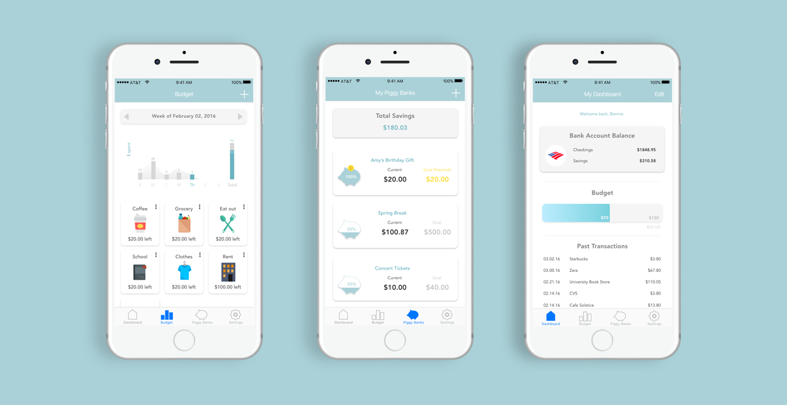
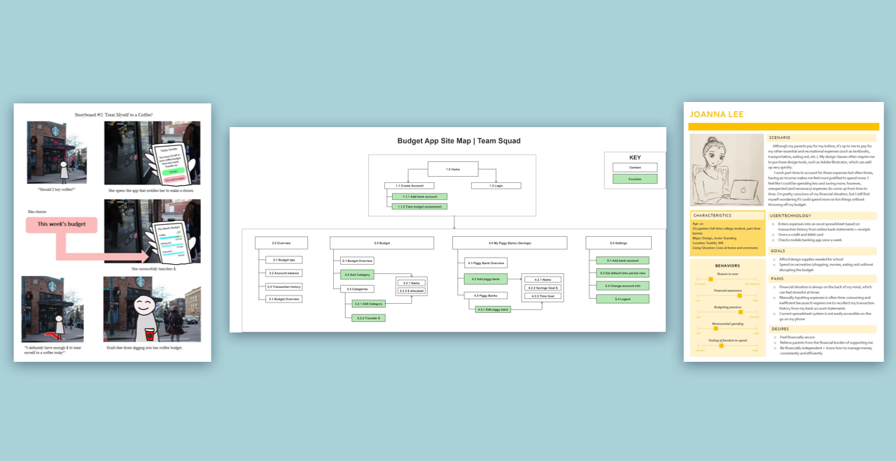
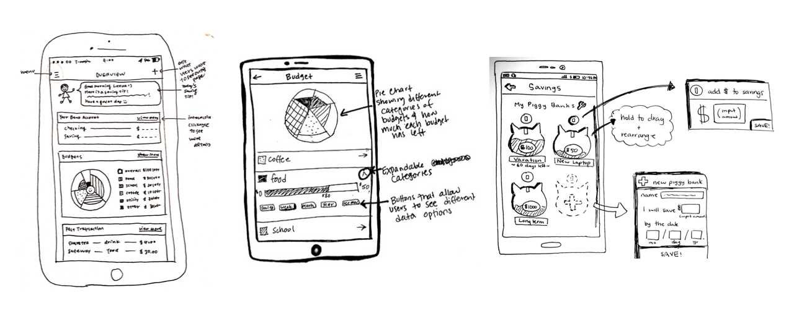
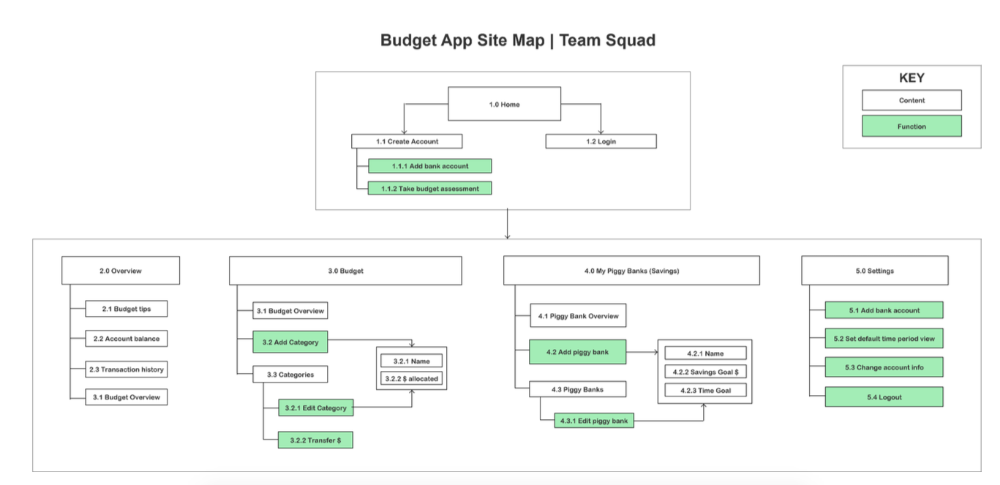
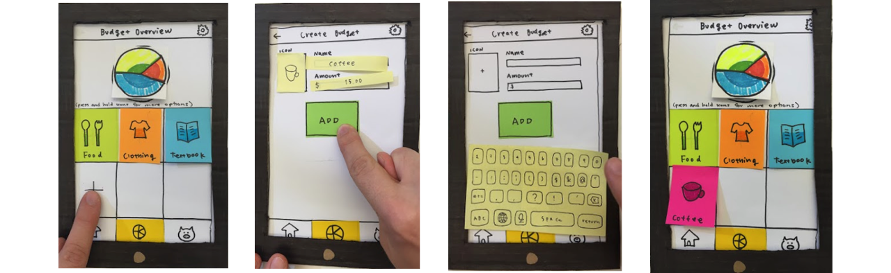

A budgeting app for college students.
We designed a budgeting experience to encourage better saving and spending habits.
About
Many college students live on a tight budget as they balance between several financial expenses. From tuition to rent to food to coffee, keeping track of it all can be difficult. Although there are many budgeting tools out there, most of our competitor apps target working professionals. Unlike this older demographic, students often do not hold a stable income and their costs can vary from quarter to quarter. This fluidity can be attributed to a variety of factors: irregular income depending on time of year, different number of textbooks to buy every quarter, or differing amounts of financial aid. Regardless, students need a flexible tool for their changing needs.
In response, we designed a budgeting app that targets a young demographic. Our aim is to aid students in increasing financial awareness and establishing budgeting habits in a friendly, non-intimidating manner.
This project was completed as part of an upper-level undergraduate course in User Experience Design in the Human Centered Design and Engineering Department at the University of Washington during the Winter 2015.
In response, we designed a budgeting app that targets a young demographic. Our aim is to aid students in increasing financial awareness and establishing budgeting habits in a friendly, non-intimidating manner.
This project was completed as part of an upper-level undergraduate course in User Experience Design in the Human Centered Design and Engineering Department at the University of Washington during the Winter 2015.
User Research
As the first step in the process, we identified our primary user and issue to be addressed. Afterwards, we conducted some research which consisted of qualitative interviews and competitive analysis. This step was focused on understanding our problem better. To do so, we started out with a large scope. Our interviews and competitive analysis aimed to expand on aspects of the problem and most of all: gage whether there truly is a problem out there to be solved. From conducting interviews and competitive analysis, we cardsorted our findings, gained insight on the issue, and were able to refine the problem. This step served as a crucial base for our next step: building personas.
Personas
Based on research findings, two personas were developed; the purpose was to better understand how our target user experiences the problem. Several components are considered when building personas: their characteristics, goals, pains, desires, current technology use, current behavior, and scenario. Pinpointing these details led us to better empathize with our target user; they helped us understand how each aspect contributed to the problem. All in all, personas led to a more dimensional understanding of the problem as well as knowing who we are designing for. The next step would be to further detailing of our persona scenarios, now that we’ve established a groundwork for our user’s story, if you will.
Scenarios
After building personas, we created scenarios of our personas interacting with our product. By developing scenarios and imagining how our product will be used in different context, we were able to consider main functionality and designs that would be necessary to fulfill user needs. This helped us to have a clear image of what kind of functionality we want to design before getting into sketching process.

Design Sketches
After creating personas and scenarios, we sketched out our visions for the app. Sketching was only appropriate as the step after identifying user goals and needs in the previous step; creating personas allowed us to design with purpose. Design sketches began individually which helped produce a maximum amount of creativity and ideas. Afterwards, we critiqued each other’s design ideas as a group. This part of the process encouraged conversation about what worked and what didn’t. Filtering our ideas allowed us to narrow our focus and move forward in the process. We decided the overview page, budgeting page, and savings page were important pages to be improved upon. Our design sketches were essential for the next step: creating storyboards which show our ideas in action.

Storyboards
After design sketches, storyboards were created in order to show how users would interact with our product. The purpose was to see if our design ideas made sense in the context of our personas lifestyles. Storyboards brought the concept to life; they encouraged us to think about the several situations that could potentially serve as the context for our product. Our team created two storyboards each: one sketch-based and one photo-based. These storyboards helped us confirm basic functionality and aided in brainstorming key informational pieces for the next step: creating the site map.
Site Map
Before wireframing and creating mockups, we created a sitemap to outline which pages would be necessary to create our app. By laying out the information architecture of the app, we could move into paper prototyping more efficiently. The storyboard helped solidify which pages were necessary for the app. The high level pages were 1.0 Home (including login and signup as subpages), 2.0 Overview, 3.0 Budget (including sub-budget category pages), 4.0 Piggy Banks, and 5.0 Settings. The sitemap also highlights which subpages are functional actions.

Paper Prototype
Paper prototypes brought our design sketches to life. Being part of the UX design process, developing paper prototypes was vital in bringing our app from a concept to an interactive experience. Afterwards, testing our prototypes allowed us to better understand our users’ decision-making process and tendencies when interacting with Budget Buddy’s functionality.
Our test subjects were presented with three tasks to complete: (1) Create a $15 budget category for coffee, (2) Transfer the remaining clothing budget to savings, and (3) Create a piggy bank for Beyonce concert tickets. From the data collected from testing our prototype, we discovered both strengths and weaknesses of our app. We understood which tasks were easy and intuitive as well as which were more complex and challenging. The user feedback gained from paper prototyping served as a path for further analysis.

Evaluation Study
The evaluation study and plan was conducted based on paper prototype tests. Based on the collective experience and feedback from our test subjects, we were able to gain insight on our app’s key paths. This process involved picking apart our subject’s feedback and truly understanding the reasoning behind what they said and/or felt. After doing so, we established our findings and then suggested improvements. Evaluation studies proved to be incredibly helpful in revealing both the strengths and weaknesses of our app. We better understood what worked well as well as what didn’t; most importantly, we were able to uncover why. By conducting an evaluation study, we were able to plan out our next steps for improving Budget Buddy. This led to another iteration of design sketches and refinement of our app’s key paths.
Wireframes
Annotated wireframes is the artifact that displays the expanse of our app’s functionality; all screens and pages are included from signup to create a piggy bank. After our evaluation findings prompted several design iterations, we nailed down key details-- but not all details. Regardless, this was enough to wireframe the entirety of Budget Buddy, leaving us with few design choices left to make in the end. As implied by the name, wireframes serve as a framework for all of our app’s general visual layout and functionality. There was little emphasis on visual design-- and great emphasis on how all of the app’s parts relate to one another. The process of wireframing pushed us to think about Budget Buddy as a cohesive experience; it also prepared us for the next step: creating high-fidelity mockups.

Hi-Fi Mockup
Creating high fidelity mockups was the pixel pushing part of the process; it was all about finalizing Budget Buddy’s visual design. This involved decisions such as settling on a color scheme, creating a logo, designing icons, choosing font, etc. Hi-fi mockups really helped our team see Budget Buddy finally being put together as a polished product. However, creating hi-fi mockups was only appropriate as the last step after carrying out most of the UX process from user research to initial design sketches to paper prototyping to extensive wireframing. It would be inefficient in light of the design process if we were to create hi-fi mockups first- only to be changed later when we realize the solution wasn’t the best fit for our target audience. Creating hi-fi mockups relied on having key decisions already made. This last artifact concludes our project for now. However, this doesn’t necessarily mean the end. After all, the UX design process is about reiteration; there is plenty of room for improvement in the future!